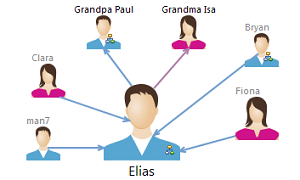
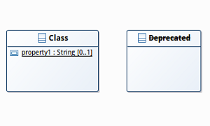
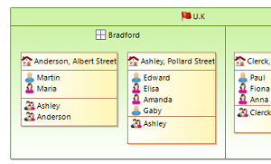

Sirius Web version is now available! Learn More
This release comes with many ergonomic improvements for a better edition of diagrams.
Now the edges are linked closely to the images. You only need to use images with a transparent background.

In the Appearance tab, in addition to Bold and Italic, it is now possible to set the font formatting style to Underline and Strike through.

Containers now support vertical and horizontal compartments layout, thanks to new possible values for Children Presentation attribute.

Keyboard shortcuts were added on table and tree: refresh (F5), quick outline (Ctrl+O) and line deletion (Del).
On diagrams, it is now possible to set a custom background image on list containers.
When users need to simplify their diagram, now they can hide the label of containers.
Sirius 3.0 introduces AQL (Acceleo Query Language), a new language that makes your life easier writing expressions for querying EMF models.
Usable as a new query language in Sirius configuration files, AQL is a simplified and optimized variant of Acceleo / OCL. The implementation has been specifically tailored for the Sirius context, providing much better performance.
AQL expressions start with the aql: prefix and have a syntax similar to Acceleo (without the enclosing [../] brackets). This new syntax is very easy to learn: if you know OCL, you already know AQL!
The following example shows how an Acceleo 3 expression can be simplified with AQL:
This release comes with lots of performance improvements, also including reduced memory consumption. This was tested and validated with models composed of more than 1 million elements.
Here is a list of major works done for Sirius 3.0:
With Sirius 3.0.0, potential problems when creating a new Sirius-based modeler are detected earlier:
The complete list of changes is available here: http://www.eclipse.dev/sirius/doc/Release_Notes.html#sirius3.0.0.
Read What's new in Sirius 2.0 to see the new and noteworthy features of previous version.